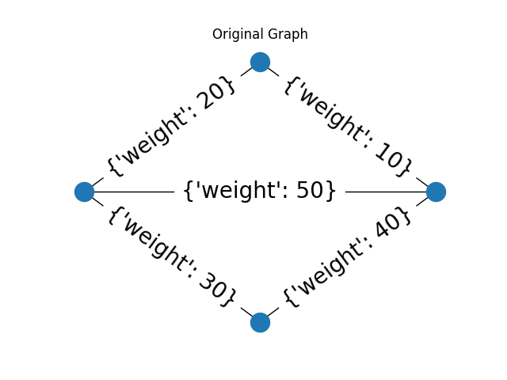
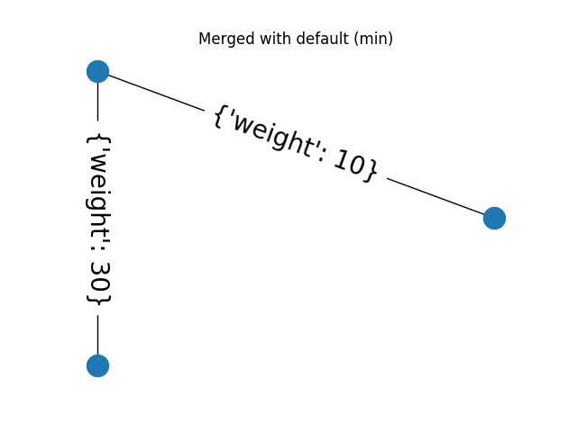
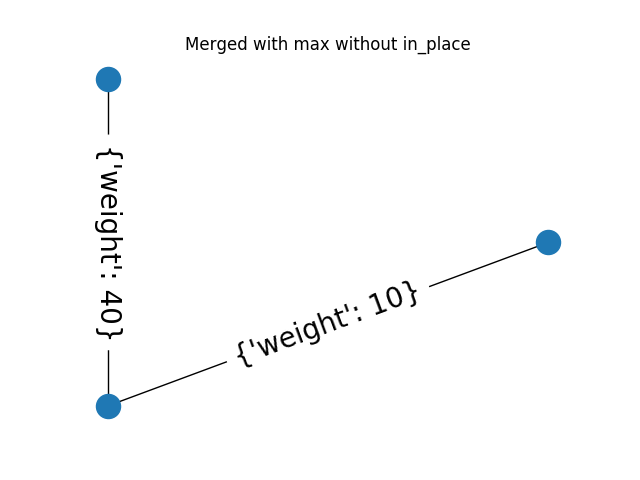

Source
SourceNote
Click here to download the full example code or to run this example in your browser via Binder
Region Adjacency Graphs¶
This example demonstrates the use of the merge_nodes function of a Region
Adjacency Graph (RAG). The RAG class represents a undirected weighted graph
which inherits from networkx.graph class. When a new node is formed by
merging two nodes, the edge weight of all the edges incident on the resulting
node can be updated by a user defined function weight_func.
The default behaviour is to use the smaller edge weight in case of a conflict. The example below also shows how to use a custom function to select the larger weight instead.
- 
- 
- 
from skimage.future.graph import rag
import networkx as nx
from matplotlib import pyplot as plt
import numpy as np
def max_edge(g, src, dst, n):
"""Callback to handle merging nodes by choosing maximum weight.
Returns a dictionary with `"weight"` set as either the weight between
(`src`, `n`) or (`dst`, `n`) in `g` or the maximum of the two when
both exist.
Parameters
----------
g : RAG
The graph under consideration.
src, dst : int
The vertices in `g` to be merged.
n : int
A neighbor of `src` or `dst` or both.
Returns
-------
data : dict
A dict with the "weight" attribute set the weight between
(`src`, `n`) or (`dst`, `n`) in `g` or the maximum of the two when
both exist.
"""
w1 = g[n].get(src, {'weight': -np.inf})['weight']
w2 = g[n].get(dst, {'weight': -np.inf})['weight']
return {'weight': max(w1, w2)}
def display(g, title):
"""Displays a graph with the given title."""
pos = nx.circular_layout(g)
plt.figure()
plt.title(title)
nx.draw(g, pos)
nx.draw_networkx_edge_labels(g, pos, font_size=20)
g = rag.RAG()
g.add_edge(1, 2, weight=10)
g.add_edge(2, 3, weight=20)
g.add_edge(3, 4, weight=30)
g.add_edge(4, 1, weight=40)
g.add_edge(1, 3, weight=50)
# Assigning dummy labels.
for n in g.nodes():
g.nodes[n]['labels'] = [n]
gc = g.copy()
display(g, "Original Graph")
g.merge_nodes(1, 3)
display(g, "Merged with default (min)")
gc.merge_nodes(1, 3, weight_func=max_edge, in_place=False)
display(gc, "Merged with max without in_place")
plt.show()
Total running time of the script: ( 0 minutes 0.157 seconds)